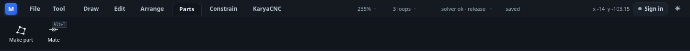
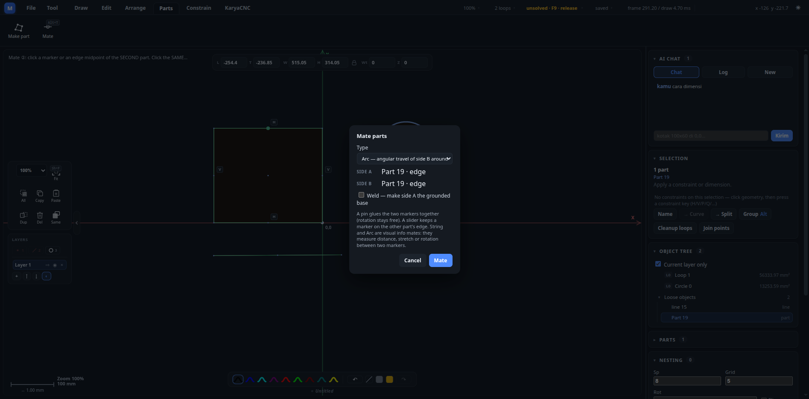

Tab Parts — Part & Assembly
Part adalah benda kaku yang hanya dapat diputar dan digeser. Cocok untuk merancang perakitan (assembly) sebelum dipotong di mesin.

1. Make part
Pilih objek di kanvas, lalu klik Make part (atau di ribbon Parts). Hasilnya satu benda kaku dengan:
- Satu polyline per kontur.
- Marker pada setiap node dan tengah segmen.
- Marker pusat untuk loop tertutup.
Catatan: garis bantu (hijau) tidak ikut di-bake ke part. Part hanya bisa berputar dan bergeser — menggeser satu titik memindahkan seluruh part. Geometri master dibekukan (frozen).
2. Mate — gabungkan dua part (Alt+T)
Mate menyambung dua part melalui marker. Klik marker pada satu part, lalu marker pada part lain (atau tengah tepi untuk slider). Klik marker yang sama dua kali untuk grounded (paku ke dunia).
| Tipe mate | Keterangan |
|---|---|
| Pin | Menyatukan dua marker bersama; rotasi tetap bebas. |
| Slider | Marker pada tepi part lain: dapat berotasi dan bergeser sepanjang garis tersebut. |
| String | Garis ukur lentur yang menampilkan perubahan jarak/panjang secara langsung. |
| Arc | Perjalanan sudut sisi B di sekitar sisi A. |
| Weld / Ground | Klik marker yang sama dua kali = paku marker ke dunia (bahan dasar). |

Peringatan: part tidak pernah dipotong atau diekspor — part adalah alat visualisasi uji mekanisme, bukan geometri akhir untuk CNC. Untuk potong, pecah part kembali atau gunakan geometri aslinya.